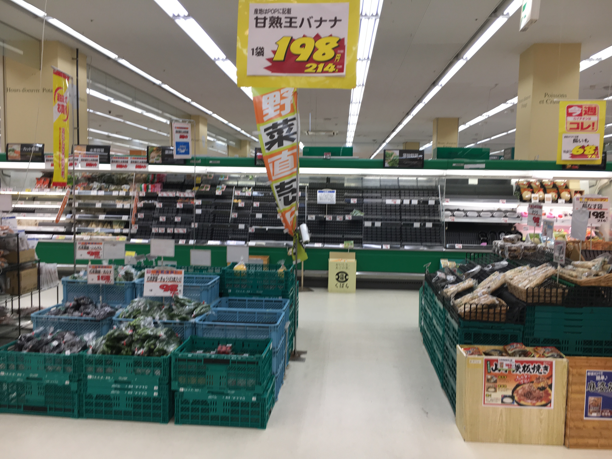

上一章
2018年7月，广岛县经历了前所未有的豪雨。西条虽然不是最重的灾区但也很严重。铁路停运了几天，公路坍塌，食品无法运输。全市超市被抢购一空。学校食堂难得还有饭，我从来没见过那么多人排队。镜山公园山体滑坡一年后才修好。ブールバール塌树车路封闭，其中一段充满泥泞。当日是周六，雨是周五下的，但周五下班时雨也不是特别大，我也没印象什么时候下的豪雨了。
我现在带你们看看当日ブールバール的灾情。
经历过这么一段路后，我变成怎样？

自行车我清洁了很久。
我自行车的轨迹。
周六早上我到底去哪？健身房！幸好日本健身房另外换鞋。我就把脏的鞋子放在门口，当时也没人。不管风雨步还是要跑的。
塌树
看看对面马路，这是墓园，以前都不知道里面怎样的。

现在来看看镜山。
路上的指示牌都沾了泥。
因为山体滑坡曾经有禁止进入告示。我的照片是撤了警告才拍的。
豪雨后非常浑浊的湖。
塌树一年后才能清理。期间我来跑步不能完整跑一圈，因为部分线路封了。

中间的洞是山体滑坡，豪雨后在广岛县很常见，而且一直保持着。
跑完步我还是去了Paganini吃蛋糕，经过居民区顺便观察民情。

这个景象很常见，我一同事也是这样。当天由于类似案件太多，他报警等了六七小时。

民居漂亮的花园顿时变了荷塘。

被抢购一空的西条超市。

教会所在地八本松是重灾区。这是教会附近。
另外上几张去东广岛天文台的照片

不是地震。


同样到处是泥。

下一章